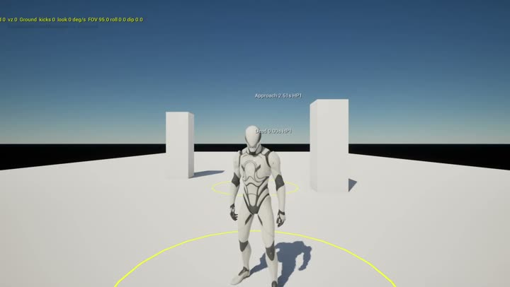
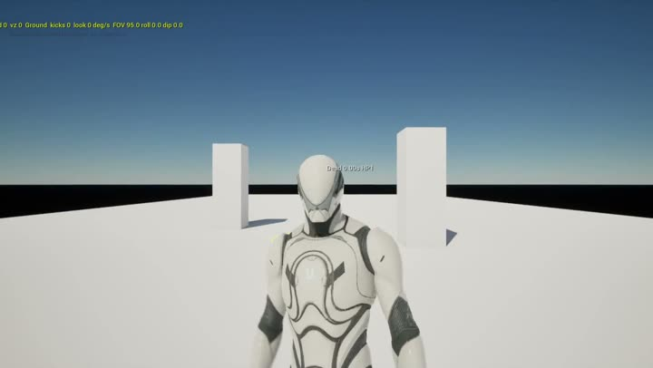
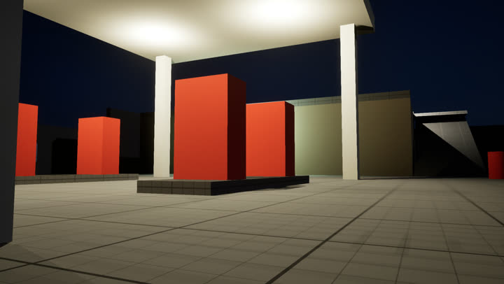
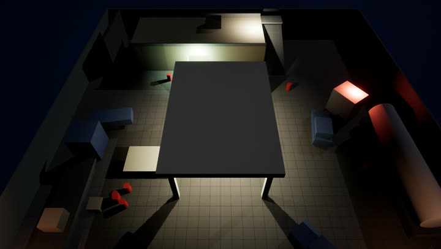
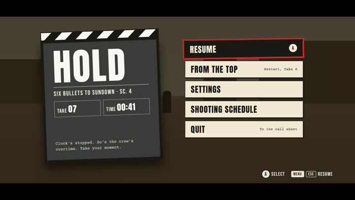
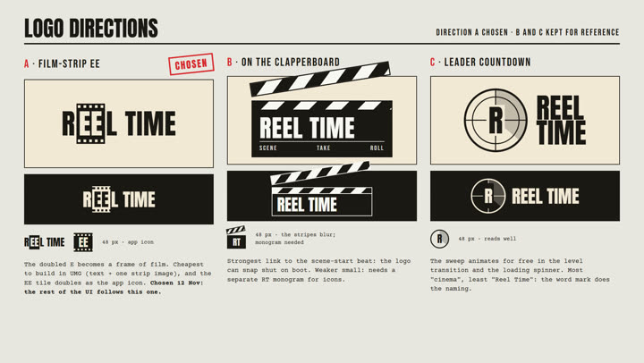
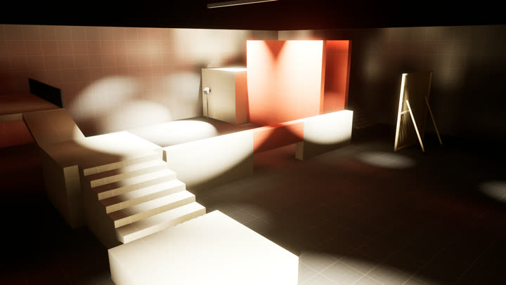
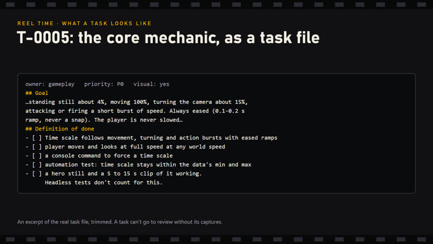
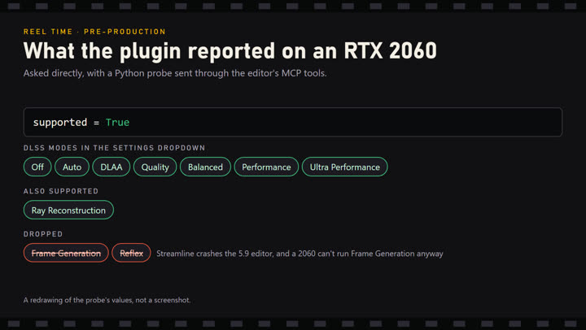

Gallery
43 shots and 6 clips from the build, newest first. Select one to see it full size.

A shambler spawns 7 metres out, walks in, tells, and hop-lunges into the camera. Then a fresh one takes a debug hit and ragdolls away.
The first zombie walks, lunges and ragdolls Day 1, hour 3

The approach. The yellow ring and the label over its head are debug drawing.
The first zombie walks, lunges and ragdolls Day 1, hour 3

The lunge, from the receiving end.
The first zombie walks, lunges and ragdolls Day 1, hour 3

One hit: the ragdoll is thrown the way the hit was going.
The first zombie walks, lunges and ragdolls Day 1, hour 3

Five seconds on the soundstage: run, slide under the lintel, run at the checker wall, jump, kick off it. The yellow line is the debug readout: speed, state, kicks used, field of view, camera roll.
Run, slide, wall kick: the player moves Day 1, hour 3

Mid-slide under the lintel. The field of view widens and the camera rolls into the slide.
Run, slide, wall kick: the player moves Day 1, hour 3

Full run at the checker wall the demo spawns, 8.2 metres a second.
Run, slide, wall kick: the player moves Day 1, hour 3

Just after the kick. The camera rolls away from the wall, then settles.
Run, slide, wall kick: the player moves Day 1, hour 3

Saucers Over Millbrook, Scene 4: a fly up the main street, past the parked cars to the crashed saucer, then up to the one still hovering.
Two more sets, and one that built itself three times Day 1, hour 3

Dead Mile Motel, Scene 3: from the player start, up the road under the pump canopy, to the shop door and over the roof.
Two more sets, and one that built itself three times Day 1, hour 3

Where the player starts. Pastel shopfronts, staggered cars for cover, the crashed saucer closing the far end and a second one overhead.
Two more sets, and one that built itself three times Day 1, hour 3

The wide camera mark. The hotel balcony on the left is where two enemies will shoot down the street.
Two more sets, and one that built itself three times Day 1, hour 3

The overhead mark. The red disc by the pink diner is the mark the player finishes on.
Two more sets, and one that built itself three times Day 1, hour 3

The player start. Four red pump placeholders under the canopy, the shop door lit behind them.
Two more sets, and one that built itself three times Day 1, hour 3

The low camera mark, at floor level among the pumps.
Two more sets, and one that built itself three times Day 1, hour 3

The overhead mark, which mostly films the top of the canopy. It needs moving.
Two more sets, and one that built itself three times Day 1, hour 3

I ran the UI brief through Claude Design and got a style tile, a logo, a component sheet and 15 screens. Menus are call sheets, the pause screen is a slate that says HOLD.
The look arrives: production paperwork, in 19 artboards Day 1, hour 2

HUD mockup for the zombie film: orange accents, shells for ammo.
The look arrives: production paperwork, in 19 artboards Day 1, hour 2

HUD mockup for the 50s alien film: teal and pink, plasma cells.
The look arrives: production paperwork, in 19 artboards Day 1, hour 2

HUD mockup for the noir film: black and white only, so warnings rely on shape and brightness.
The look arrives: production paperwork, in 19 artboards Day 1, hour 2

Scene start: the slate, then ACTION!
The look arrives: production paperwork, in 19 artboards Day 1, hour 2

One hit: CUT! and the take number rolls over. The whole beat is under a second.
The look arrives: production paperwork, in 19 artboards Day 1, hour 2

The director's cut replay overlay, with skip and fast forward.
The look arrives: production paperwork, in 19 artboards Day 1, hour 2

The dailies card after a scene: takes, time against par, stars.
The look arrives: production paperwork, in 19 artboards Day 1, hour 2

Level select as a shooting schedule.
The look arrives: production paperwork, in 19 artboards Day 1, hour 2

The pause screen: HOLD.
The look arrives: production paperwork, in 19 artboards Day 1, hour 2

The style tile: paper cream, ink black, tape red, and a pair of accent colours for each film genre.
The look arrives: production paperwork, in 19 artboards Day 1, hour 2

Three logo directions. A was chosen: the doubled E of REEL as a frame of film.
The look arrives: production paperwork, in 19 artboards Day 1, hour 2

Pass one of the grindhouse look on the screen-test set: grain, scratches, a vignette, frame jitter and a warm cast.
The first set, and a film look that won't hold still Day 1, hour 2

Before: The same camera with the look off and on. Whites go cream, reds go orange, the corners darken.
The first set, and a film look that won't hold still Day 1, hour 2

After: The same camera with the look off and on. Whites go cream, reds go orange, the corners darken.
The first set, and a film look that won't hold still Day 1, hour 2

Wide mark. Rendered offscreen without auto exposure, so it's much darker than the game view.
The first set, and a film look that won't hold still Day 1, hour 2

Low mark, at floor level, looking at the slide wall and its red lintel.
The first set, and a film look that won't hold still Day 1, hour 2

Side mark, blocked. The camera sits right behind the plywood flat.
The first set, and a film look that won't hold still Day 1, hour 2

Three cuts from the Engine session's test clip: walk to the cylinder, turn, walk the wall. The input is scripted.
First footage, and the take that filmed the wrong window Day 1, hour 2

The Engine session's first task: six checks, two with caveats.
First footage, and the take that filmed the wrong window Day 1, hour 2

The template arena, from the clean take. The real soundstage greybox is being built now.
First footage, and the take that filmed the wrong window Day 1, hour 2

The first milestone landed at 06:08, 68 minutes into the jam. Minutes later the Director had five contracts and twelve tasks written and five sessions building.
Pitch locked: Reel Time, nearly three hours early Day 1, hour 2

The first twelve tasks, by session. Movement and time are first because moving is what runs time.
Pitch locked: Reel Time, nearly three hours early Day 1, hour 2

Task T-0005, trimmed. Anything a player can see needs a still and a clip before it can go to review.
Pitch locked: Reel Time, nearly three hours early Day 1, hour 2

Six compile attempts. The first two failures were ours, the next three were one Unreal 5.9 change, and the sixth passed.
Porting NVIDIA DLSS from Unreal 5.8 to 5.9 in 75 minutes Day 1, hour 2

Three compiles of hand patches, then the switch Unreal 5.9 provides for exactly this.
Porting NVIDIA DLSS from Unreal 5.8 to 5.9 in 75 minutes Day 1, hour 2

Launch one was blocked by a version label, launch two crashed on the first frame, launch three came up clean with DLSS only.
Porting NVIDIA DLSS from Unreal 5.8 to 5.9 in 75 minutes Day 1, hour 2

What the DLSS plugin reported when asked directly through the editor's MCP tools.
Porting NVIDIA DLSS from Unreal 5.8 to 5.9 in 75 minutes Day 1, hour 2

Two evenings of setup before the jam: a crew of Claude Code sessions, a smoke test that found 11 problems, the rules, the theme reveal and a Q&A. No game.
Pre-production: everything that existed before the clock Day 1, hour 1

Two evenings of setup, then the clock. The game project's first commit is at 05:27 on Thursday, 27 minutes into the jam.
Pre-production: everything that existed before the clock Day 1, hour 1

Who talks to whom. Every arrow is a file dropped in an inbox folder.
Pre-production: everything that existed before the clock Day 1, hour 1

A task's journey, from a request to something a player can see.
Pre-production: everything that existed before the clock Day 1, hour 1

Eight of the eleven problems from the smoke test on Tuesday 10 November.
Pre-production: everything that existed before the clock Day 1, hour 1